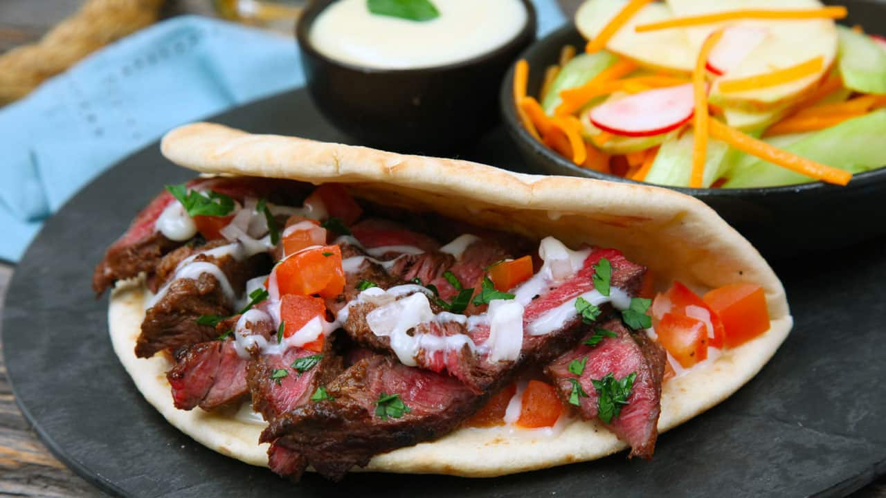

If you've ever been to Halifax, Nova Scotia, Canada, hopefully you had the chance to try a donair. This is the recipe used to make those donairs in some places in town. Remember to knead that meat until it's almost a paste!
Donair, inspired by Döner Kebab, is a uniquely Canadian variation on the gyro sandwich.
Preheat oven to 300 degrees F (150 degrees C). Grease a large baking pan with sides.
Place beef, lamb, flour, salt, oregano, dry mustard, 2 1/2 teaspoons garlic powder, black pepper, cayenne pepper, chile pepper, paprika, and Italian seasoning in a bowl; knead all ingredients together with your hands until mixture is like a paste, about 10 minutes. Roll the meat mixture into a large loaf shape, and place into the prepared pan.
Bake in the preheated oven until no longer pink in the center, about 2 hours. An instant-read thermometer inserted into the center should read at least 160 degrees F (70 degrees C). Remove from oven; place meat on a drip rack until completely cool to allow juices and fat to drain. Refrigerate meat for 6 hours or overnight.
Stir evaporated milk, sugar, and 2 teaspoons garlic powder together in a small bowl; gradually stir in vinegar just until mixture thickens.
Slice donair meat into strips about 1/8-inch to 1/4-inch thick. Fry meat strips in single-sandwich batches in a skillet over medium-high heat until meat begins to crisp at the edges; remove from pan. Quickly rub 1 pita round lightly with water; fry pita in same frying pan, turning once, just until warm, about 1 minute.
Spread pita with about 1/2 tablespoons of sauce mixture, top with donair meat, and garnish with onion, tomato, and more sauce; repeat with remaining meat and pita.